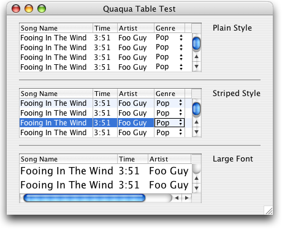

Property |
Type | Notes |
|---|---|---|
|
java.lang.String |
Values: "plain", "striped" |
The Quaqua Look and Feel supports tables with plain style and with striped style (aka alternating row colors).
The picture below shows the two styles as well a table using a large font.

You can specify the desired style by setting the client property Quaqua.Table.style to
striped or to plain. If you don't specify a value,
the plain style is used.
|
For best results with editable JTable's you may consider
using your own implementation of a TableCellEditor, because the default implementation
does only draw a focus ring around editable text fields (instead of around
all editable components) and it does not properly honour font settings. Please use the following class, as a replacement of the DefaultTableCellEditor. The
test package of the Quaqua Look and Feel contains this class as well.
import java.awt.*;
import javax.swing.*;
import javax.swing.border.*;
public class DefaultCellEditor2 extends DefaultCellEditor {
/**
* Constructs a |
If you implement a TableCellRenderer on your own, make sure that the renderer component is non-opaque. If your renderer component is opaque, the component obscurs the stripes of a striped table.